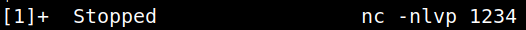

4.7 Get a good pty shell (2nd flag)
1. On your Kali Machine reverse shell run the following commands.
shell=/bin/bash script -q /dev/null
2. Now the shell shows a “$” symbol. Click “Ctrl+Z” you'll exit from the shell.
Output:

3. Run this command.
$stty raw -echo;fg
Output:
4. Type “reset” and answer “xterm” to the “Terminal type?” question.
Output:
5. Run the following commands.
stty columns 173 rows 43
cd /var/www
ls -al
cat flag2.txt
cd /var/www
ls -al
cat flag2.txt
Output: